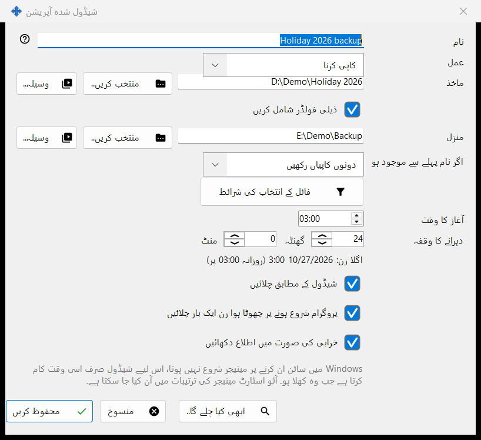
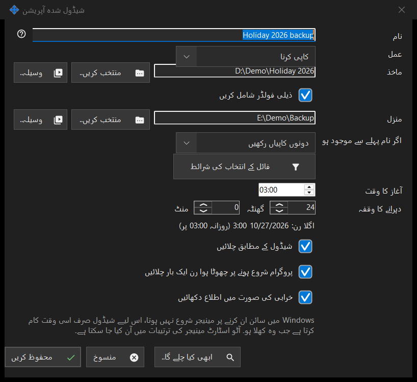

شیڈول شدہ آپریشن
یہ کس مقصد کے لیے ہے
ایک شیڈول شدہ فائل آپریشن میں ترمیم کرتا ہے: دہرائے جانے والے شیڈول پر فائلوں کو ماخذ سے منزل تک کاپی کرنا، منتقل کرنا، حذف کرنا یا آرکائیو کرنا۔ یہ Share Manager کی ترتیبات کے صفحے شیڈول شدہ فائل آپریشنز سے نیا.. یا ترمیم کریں.. کے ذریعے کھلتا ہے، اور ویور کے فولڈر مینو کی آئٹم اس فولڈر کے لیے ایک آپریشن شیڈول کریں.. سے بھی، جو اس فولڈر کو ماخذ کے طور پر بھر دیتی ہے۔


اس ترتیب میں
- نام درج کریں اور عمل چنیں۔
- منتخب کریں..، وسیلہ.. یا Google ڈرائیو کے ذریعے سے ماخذ طے کریں، اور کاپی، منتقل اور آرکائیو کے لیے منزل بھی۔
- کاپی اور منتقل کے لیے چنیں کہ اگر نام پہلے سے موجود ہو تو کیا ہو۔
- فائلوں کو محدود کرنے کے لیے فائل کے انتخاب کی شرائط کھولیں۔
- آغاز کا وقت اور دہرانے کا وقفہ طے کریں اور شیڈول کے مطابق چلائیں پر نشان رہنے دیں۔
- ابھی کیا چلے گا.. دیکھیں اور محفوظ کریں دبائیں۔
عناصر
عمل اور ناموں کا ٹکراؤ
عمل کاپی کرنا، منتقل کرنا، حذف کرنا یا آرکائیو کرنا ہے، اور ونڈو صرف وہی قطاریں دکھاتی ہے جو اس عمل کو درکار ہیں: حذف کرنے میں منزل نہیں ہوتی؛ اگر نام پہلے سے موجود ہو (چھوڑ دیں، اوور رائٹ کریں، دونوں کاپیاں رکھیں) صرف کاپی اور منتقل میں نظر آتا ہے؛ آرکائیو کی جانچ کے بعد اصل فائلیں حذف کریں صرف آرکائیو میں نظر آتا ہے اور اصل فائلیں تب ہی ہٹاتا ہے جب آرکائیو کو دوبارہ پڑھ کر جانچ لیا جائے۔
ماخذ اور منزل
پورا راستہ لکھیں یا منتخب کریں.. دبائیں۔ وسیلہ.. ویور کی وسائل کی فہرست سے ایک SFTP سرور یا نیٹ ورک فولڈر چنتا ہے اور آرکائیو کے لیے پیش نہیں کیا جاتا، جو صرف عام فولڈر اور Google Drive لیتا ہے۔ Google ڈرائیو کے ذریعے تب ہی نظر آتا ہے جب آپ Drive میں سائن ان ہوں یا وہ فریق پہلے سے اسے استعمال کر رہا ہو۔ جب ذیلی فولڈر شامل کریں بند ہو تو صرف ماخذ فولڈر کی اپنی فائلیں پروسیس ہوتی ہیں۔ محفوظ کریں سسٹم اور پروگرام کے فولڈروں کو اور ایسی منزل کو مسترد کرتا ہے جو ماخذ کے برابر یا اس کے اندر ہو، اور بتاتا ہے کہ کیا غلط ہے۔
فائلیں حذف کرنا
جب فائلیں ہٹائی جانی ہوں (حذف کرنا، یا اصل فائلوں کے اختیار کے ساتھ آرکائیو)، تو حذف کرنا: .. والی لائن بتاتی ہے کہ وہ کہاں جاتی ہیں: ری سائیکل بن میں، یا مستقل طور پر وجہ کے ساتھ، مثلاً نیٹ ورک یا ہٹائی جانے والی ڈسک پر ری سائیکل بن نہیں ہوتا۔ ایسے آپریشن میں Enter محفوظ نہیں کرتا؛ جان بوجھ کر محفوظ کریں دبائیں۔ شیڈول شدہ رن کبھی سوال نہیں پوچھتا اور درج کرتا ہے کہ حذف شدہ فائلیں کہاں گئیں۔
فائل کے انتخاب کی شرائط
جب شرائط ڈیفالٹ سے مختلف ہوں تو پینل خود کھل جاتا ہے۔ فائل کی اقسام: تمام فائلیں، تصاویر، آڈیو، ویڈیو، دستاویزات (تمام فائلیں باقی چاروں کو بند کر دیتی ہے)۔ ترمیم کا وقت: پوری مدت، پچھلے رن کے بعد کی نئی، پچھلا ایک گھنٹہ، پچھلا ایک دن۔ نام کا ماسک اور ماسک کے مطابق خارج کریں میں سیمی کولن سے الگ کیے گئے کئی ماسک دیے جا سکتے ہیں، مثلاً *.jpg;IMG_??.png، جنہیں فائل کے نام سے ملایا جاتا ہے۔ اس سے پرانی اور اس سے نئی دنوں اور گھنٹوں میں ہیں، اس سے بڑا اور اس سے چھوٹا MB میں۔ پوشیدہ اور سسٹم فائلیں شامل کریں بطور ڈیفالٹ بند ہوتا ہے۔
شیڈول
آغاز کا وقت دن کا وقت طے کرتا ہے، اور دہرانے کا وقفہ گھنٹوں اور منٹوں میں وقفہ؛ پورے دنوں کی تعداد ایک ہی وقت پر دہرائی جاتی ہے۔ ان کے نیچے کی لائن میں یہ لکھا ہوتا ہے: اگلا رن: وقت (اصول) یا شیڈول بند ہے: آپریشن صرف دستی طور پر چلتا ہے۔ پروگرام شروع ہونے پر چھوٹا ہوا رن ایک بار چلائیں اور خرابی کی صورت میں اطلاع دکھائیں الگ انتخاب ہیں۔ ایک اور لائن بتاتی ہے کہ شیڈول صرف اسی وقت کام کرتا ہے جب Share Manager چل رہا ہو، اور یہ بھی کہ آیا وہ Windows میں سائن ان پر شروع ہوتا ہے؛ اس ونڈو میں کوئی چیز خودکار آغاز کو نہیں بدلتی۔
پیش منظر اور محفوظ کرنا
ابھی کیا چلے گا.. ان فائلوں کی فہرست دکھاتا ہے جنہیں آپریشن پروسیس کرے گا اور کچھ نہیں بدلتا؛ رن کے لیے اس کی ضرورت نہیں۔ محفوظ کریں آپریشن کو محفوظ کرتا ہے، یا وہ فہرست دیتا ہے جو درست کرنی ہے۔ منسوخ آپ کی ترامیم رد کر دیتا ہے۔
مینیجر کی ترتیبات · SFTP اشتراک کی ترتیبات · ایکسچینج سرور کی ترتیبات